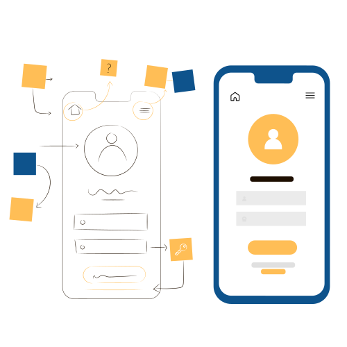

About Me
A full stack software developer with over 5 years experience and 3 years in UI/UX design with Figma. Who is proficient in JavaScript/Typescript; built websites in React & Angular, servers in NodeJs and mobile apps in React Native. Well served in Ops & cloud infrastructure and their associated technologies/use-cases: Setting up CI(Continuous Integration)/CD(Continuous Deployment) pipelines to improve quality and velocity of shipping, designing and documenting the architecture, orchestration as well as containerization, deployment, logging and monitoring applications on premise and on cloud. I can build beautiful landing pages and user interfaces as well as understand and work in deeply technical back-end systems. I also design low & high fidelity mock-ups, brand materials, wire-frames and illustrations as part of product design and development to capture and showcase user journeys and business value.
I can design, architect and manage a software development project, create product backlog & oversee sprint to sprint delivery while managing stakeholder expectations and priorities as new requests and discoveries are made. Additionally establish and maintain standards of, prioritize and assign resources in an effective and efficient manner to setup the team for success. I can create technical products end to end -from git to deployment. I know how to test and build ideas in a startup-like (lean) way. I am excited by designing and building MVP's, exploring new technologies and stacks,building small demos to test and iterate on products I've built. I understand startups and can contribute to the high level business, growth and tech strategy. With a passion for continuous development, a growth mindset cultivated through resilience, an ability to learn quickly as well as adapt to new domains of industry.